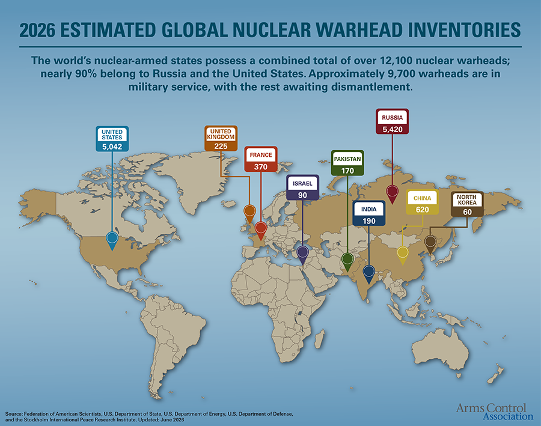
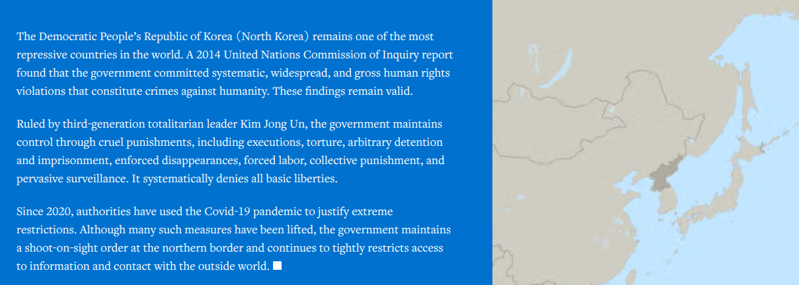

II. Why Are There Wars?
Justin Leinaweaver (Fall 2026)
The DPRK as a Global Challenge


Groups
Neorealism
Offensive Realism
Liberal Institutionalism
Economic Liberalism
Bargaining Model of War
Questions
How did we get to this point?
What should the US do about it?
The DPRK as a Global Challenge
Hultman, Kathman & Shannon (2016) on United Nations Peacekeeping (p231-238)
Before class submit to our Canvas discussion board:
What is the research question in this paper?
Diagram the model